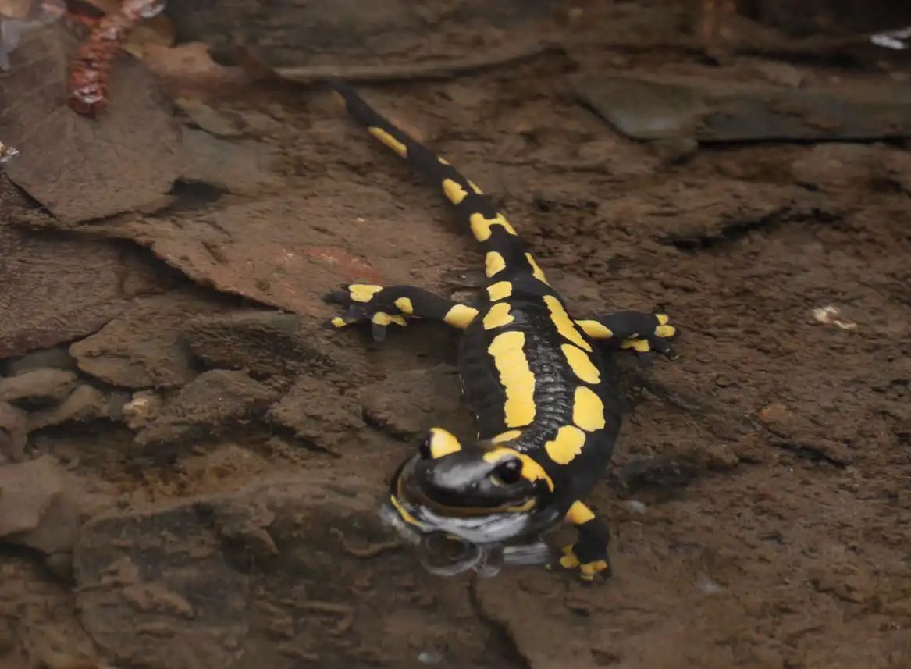
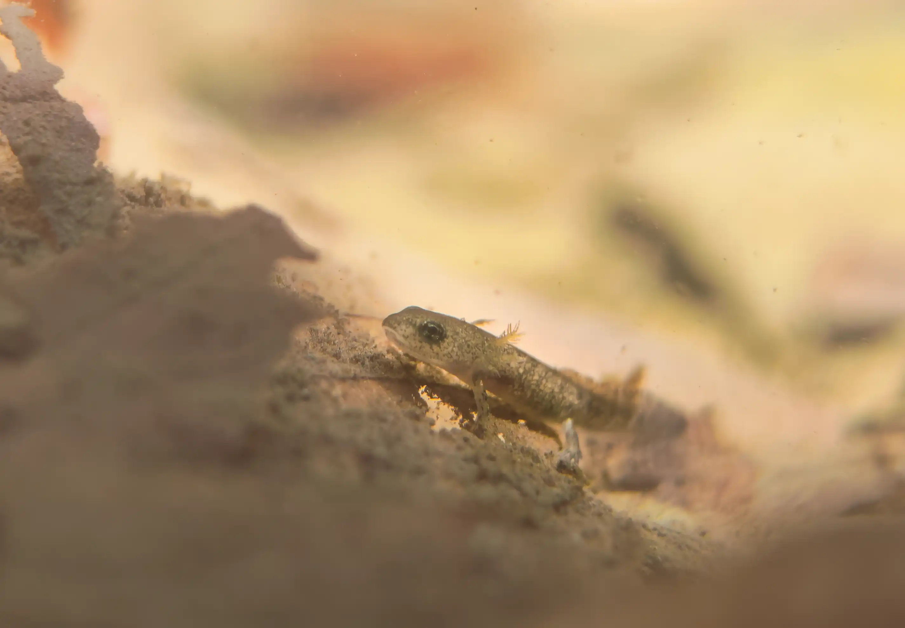
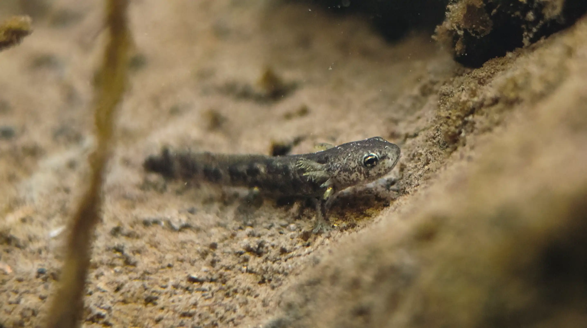

Feuersalamanderweibchen setzen ihre Larven zwischen Februar und Mai in saubere Fließgewässer oder in Tümpeln ab. Beim Absetzen der Larven platzt die Eihülle auf und 30-70 die Larven werden ins Wasser entlassen. Die Larven sind dann schon recht weit entwickelt - sie haben bereits kleine Arme, Beinchen und Büschelkiemen mit denen sie unter Wasser atmen können.

Meist geschieht dieser Vorgang nachts. An bisher 3 Tagen hatten wir das Glück dieses Schauspiel auch am Tag zu beobachten und zum Teil sogar unter Wasser filmen zu können!
